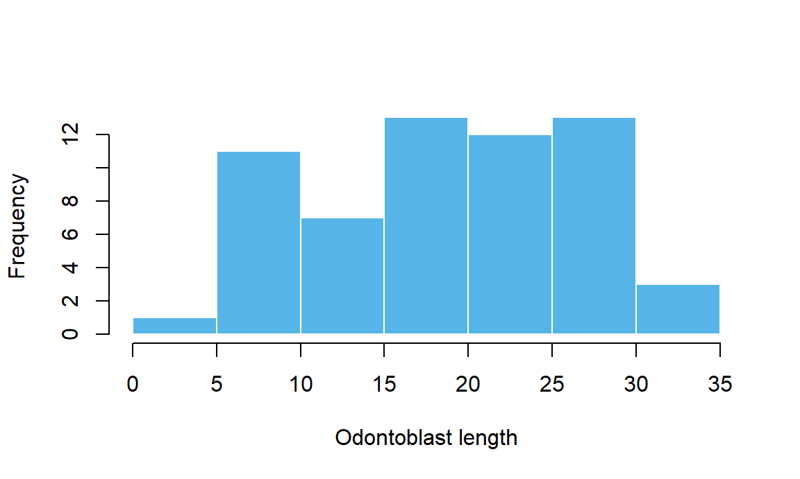
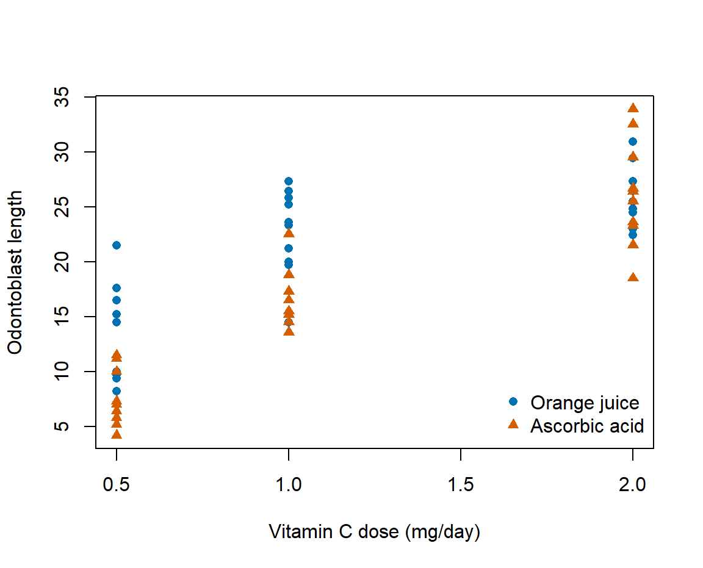
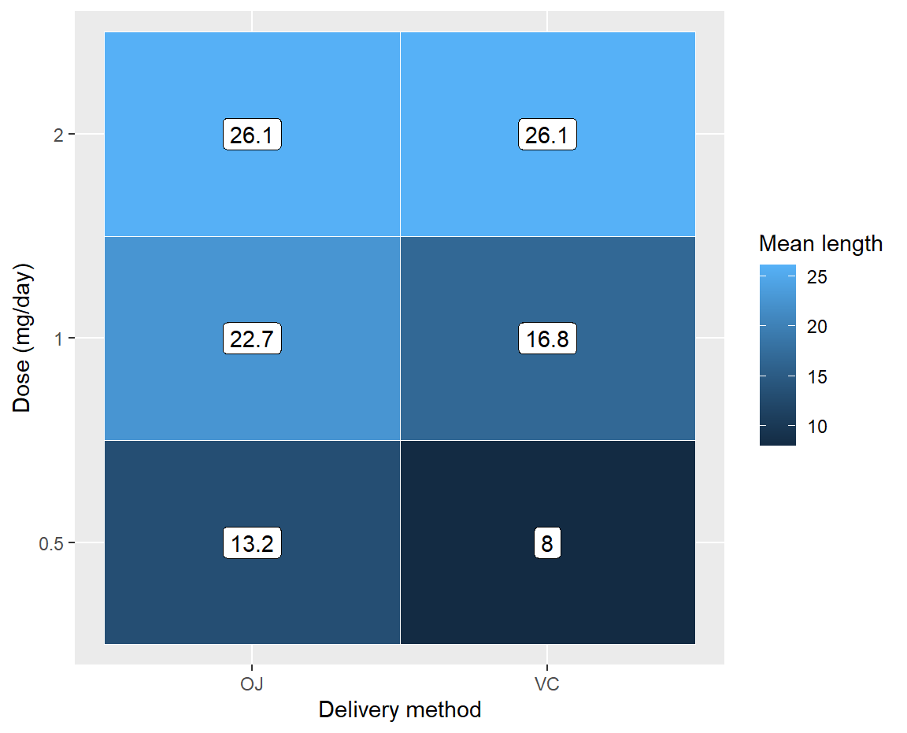
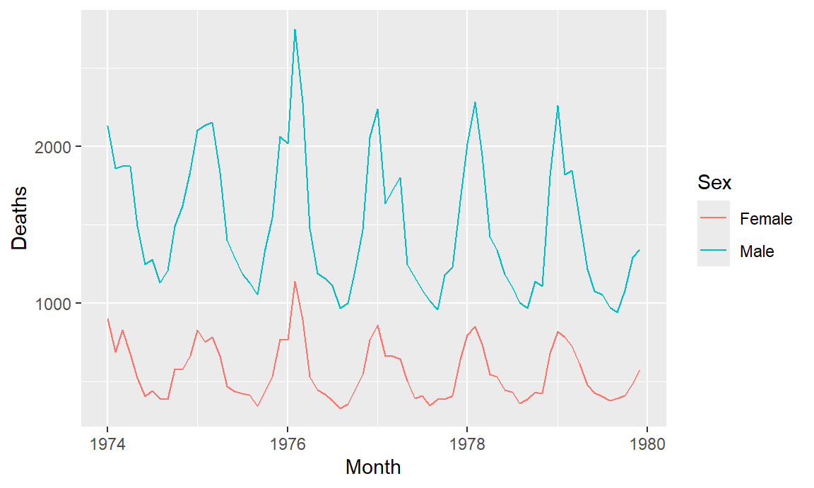

growth <- ToothGrowth
hist(growth$len, breaks = seq(0, 35, by = 5),
xlab = "Odontoblast length", main = "",
col = "#56B4E9", border = "white")
Case study · What changes in a vitamin C dose-response plot when we show the delivery method?
| Tool | Typical use |
|---|---|
| Base R graphics | Quick plots and direct control over drawing |
| ggplot2 | Layered figures with consistent scales and panels |
| lattice | Trellis plots for comparisons across groups |
| plotly | Interactive figures with hover, zoom and pan |
Base graphics ships with R. Today we use base graphics first, then ggplot2.
| Question | Variables | Plot |
|---|---|---|
| How variable is length? | One numeric variable | Histogram |
| How many animals got each dose? | Categories and counts | Bar chart |
| Does length vary with dose? | Two numeric variables | Scatterplot |
| Does length differ by delivery method? | Numeric outcome and groups | Boxplot |
| How does concentration change over time? | Ordered measurements | Line plot |
| How do group summaries vary across two factors? | Two groups and a summary | Heatmap |
| High-level calls start a plot | Low-level calls add to it |
|---|---|
plot(), hist(), boxplot(), barplot() |
points(), lines(), abline() |
| Set up axes and plotting coordinates | text(), legend(), axis(), title() |
Run the high-level call first. A later high-level call starts the next plot or panel.
Each bar counts measurements in an interval. Bin width changes what patterns you can see.
Treat each tested dose as a category. The bars show how many animals received it.
Each point is one animal. There are only three x positions, and some points overlap.
Start an empty plot with type = "n". Draw one group at a time, then explain the symbols.
plot(len ~ dose, data = growth, type = "n",
xlab = "Vitamin C dose (mg/day)",
ylab = "Odontoblast length")
with(subset(growth, supp == "OJ"),
points(dose, len, pch = 16, col = "#0072B2"))
with(subset(growth, supp == "VC"),
points(dose, len, pch = 17, col = "#D55E00"))
legend("bottomright",
c("Orange juice", "Ascorbic acid"),
pch = c(16, 17),
col = c("#0072B2", "#D55E00"),
bty = "n")
The middle line is the median. The box shows the middle half. Each box is one dose and delivery method.
Indomethacin concentration over time for one person. Each point is one blood sample.
par("mar") reads a setting. par(mfrow = c(1, 2)) changes the active device’s layout for subsequent plots.
| Setting | Controls |
|---|---|
mfrow, mar |
Panel rows and columns, margins (bottom, left, top, right) |
pch, col, cex |
Point symbol, colour, relative size |
lty, lwd |
Line type and width |
las, cex.axis, cex.lab |
Axis tick-label orientation, tick text and axis title size |
Set labels and limits on a plot with xlab, ylab, xlim and ylim.
Save the settings, draw both panels with the same y limits, then restore the settings.
The base graphics section ends here.
A plotting package built around the layered grammar of graphics.
A chart is assembled from parts that can be reused and combined. Describe how the data should appear, one choice at a time.
| Part | Our dose-response scatterplot |
|---|---|
| Data | One row per animal |
Mapping (aes()) |
Dose goes on x, length on y, method controls colour |
Geometry (geom_point()) |
Draw each animal as a point |
| Scale and coordinates | Translate values to colours and positions on x and y |
| Facets and theme | Split into panels if useful, then style the display |
A stat may summarize rows before drawing them. A histogram counts rows within bins.
Read it from top to bottom. Choose the data, map columns, then add a layer of points.
| Dataset | What one row represents | What connects the rows |
|---|---|---|
ToothGrowth |
One animal | Animals share a dose and delivery method |
Indometh |
One blood sample | Several samples come from the same person |
To draw one concentration curve per person in ggplot2, map group = Subject in the line layer.
Map a column inside aes(). aes(colour = supp) assigns colours by method and creates a guide.
Set a constant outside aes(). colour = "steelblue" gives every point the same colour.
Other aesthetics include x, y, shape, fill, size, alpha and linetype. Use group to tell a line layer which points belong together.
| Layer | Marks or summary |
|---|---|
geom_point() |
Individual observations |
geom_line() |
Connected measurements, ordered by x within group |
geom_bar() / geom_col() |
Count rows / draw supplied heights |
geom_histogram() |
Count rows within numeric intervals |
geom_boxplot() |
Show a distribution within each group |
geom_tile() |
Draw a tile at each x and y combination |
The histogram layer counts observations. Match the bin boundaries before comparing to the base plot.
Make dose a factor to give the three tested doses their own categories. Map delivery method to the fill.
Show one delivery method per panel. The default shared y scale makes the panels comparable.
Reduce to one row per tile first. A tile shows the mean for a group and hides variation within it.
means <- aggregate(len ~ supp + dose, growth, mean)
ggplot(means, aes(x = supp, y = factor(dose),
fill = len)) +
geom_tile(colour = "white") +
geom_text(aes(label = round(len, 1)),
colour = "white") +
scale_fill_gradient(low = "#315E85",
high = "#113045") +
labs(x = "Delivery method", y = "Dose (mg/day)",
fill = "Mean length")
A mapping says which variable controls colour. The scale chooses the colours and sets the legend labels.
A theme controls the look of the display. labs() supplies its wording.
Pass the plot object explicitly. The filename extension chooses the file format. Use PDF or SVG when you need scalable graphics.
A colleague has a numeric outcome for patients in three groups and wants to see spread, typical values and unusual observations.
The two UK lung disease series share a calendar. The object name identifies the sex group.
mdeaths fdeaths
Jan 1974 2134 901
Feb 1974 1863 689
Mar 1974 1877 827To compare when counts peak, keep the calendar month and make sex a column.
Stack the counts and attach each series to the same sequence of calendar months.
months <- seq(as.Date("1974-01-01"), by = "month",
length.out = length(mdeaths))
deaths <- data.frame(
month = rep(months, times = 2),
sex = rep(c("Male", "Female"),
each = length(months)),
count = c(as.numeric(mdeaths),
as.numeric(fdeaths))
)
ggplot(deaths, aes(month, count, colour = sex)) +
geom_line() +
labs(x = "Month", y = "Deaths", colour = "Sex")